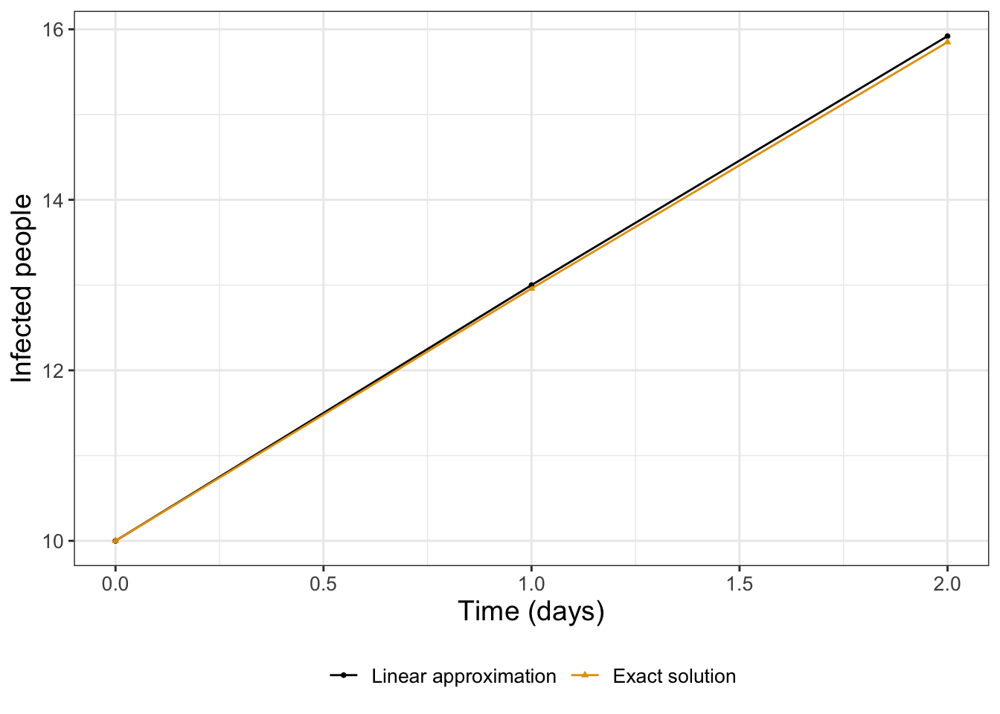
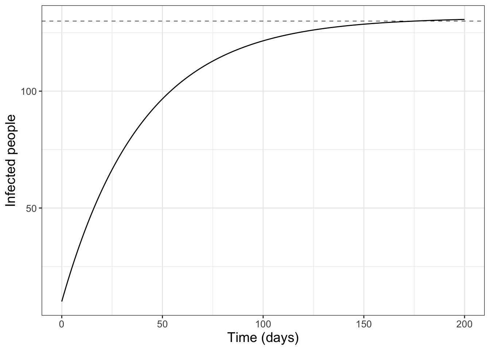
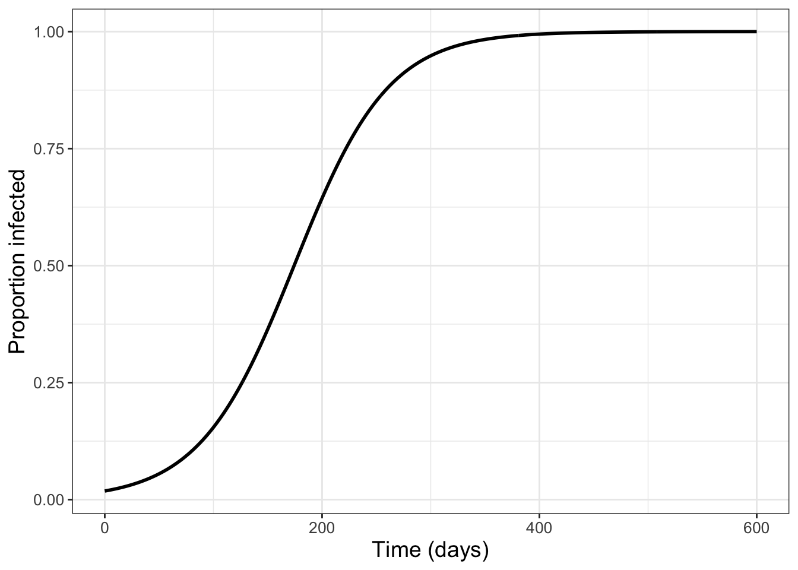
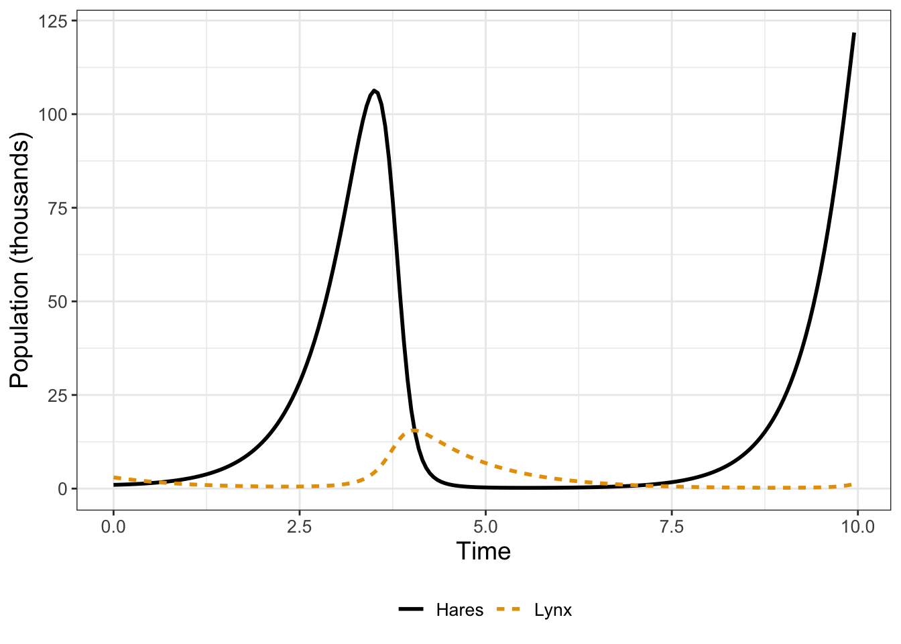
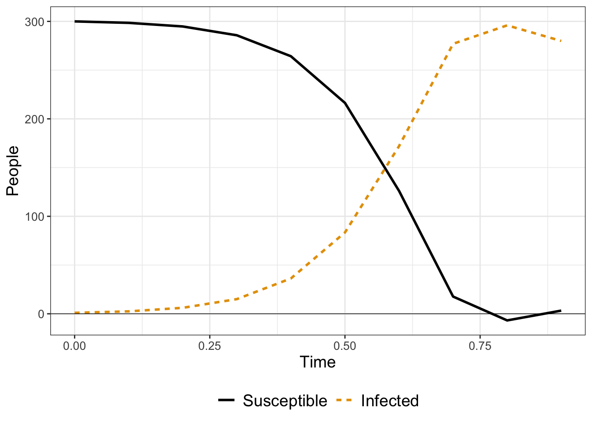
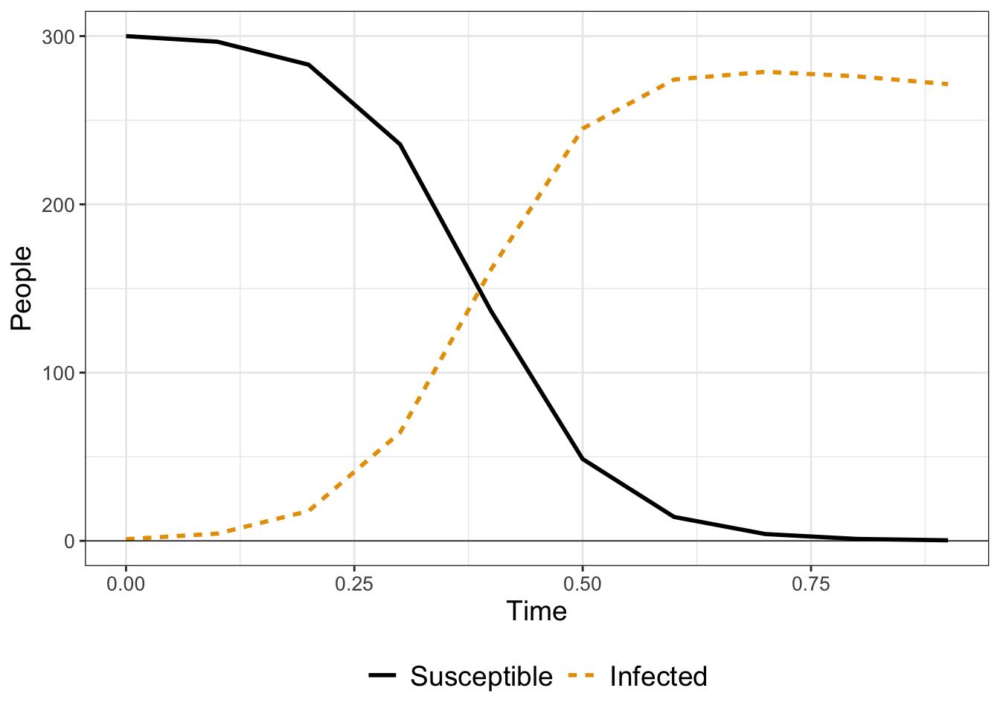

4 Euler’s Method
Chapter 3 examined modeling with rates of change. Once a differential equation model is defined one possible next step is to determine the solution to the differential equation. While in some cases an exact solution can be found (Chapter 7), in many instances we will rely on numerical methods.
The focus of this chapter is on approximation of solutions to a differential equation via a numerical method. Typically a first numerical method you might learn is Euler’s method, popularized in the movie Hidden Figures. This chapter will develop Euler’s method from tangent line equations or locally linear approximations from calculus. Let’s get started!
Note
This chapter uses following libraries: ggplot2, and tibble (all part of the tidyverse) and demodelr. See Section 2.3 on how to install packages. Prior to running any code in this section, include library(tidyverse) and library(demodelr).
4.1 The flu and locally linear approximation
Consider Equation 4.1, which is one way to model the rate of change of the flu through a population:
\[ \frac{dI}{dt} = 3e^{-.025t} \tag{4.1}\]
In Equation 4.1 the variable \(I\) represents the number of people infected at day \(t\). One question we could address using Equation 4.1 is to predict the value of \(I\) after 1 day, assuming that \(I(0)=10\). To do that we will build a locally linear approximation at \(t=0\) and use the approximation to forecast and estimate \(I(1)\).
In order to solve this problem, the formula for the locally linear approximation to \(I(t)\) at \(t=0\) is \(L(t) = I(0) + I'(0) \cdot (t-0)\). Here, \(I(0)=10\) and \(I'(0)=3\) (found by evaluating Equation 4.1 at \(t=0\)). Using \(L(t) \approx I(t)\), the formula for the locally linear approximation is given by Equation 4.2. To define Equation 4.2 we used two pieces of information: the (given) value of the function at \(t=0\) and the estimate of the derivative from Equation 4.1.
\[ L(t)=10 + 3t \tag{4.2}\]
At \(t=1\) we can make a prediction with Equation 4.2 to estimate that there will be 13 people sick. To evaluate this approximation it is helpful to compare our prediction from \(L(1)\) (Equation 4.2) to the actual value from the solution to the differential equation given in Equation 4.3:
\[ I(t) = 130-120e^{-.025t} \tag{4.3}\]
Table 4.1 compares the values of the linear approximation (Equation 4.2) to Equation 4.3:
| \(t\) | Linear approximation \(L(t)\) | Exact solution \(I(t)\) |
|---|---|---|
| 0 | 10 | 10 |
| 1 | 13 | 12.96 |
Table 4.1 shows that \(L(1)\) is an overestimate compared to \(I(1)\). Let’s expand Equation 4.2 even more by constructing another linear approximation using the differential equation. We will denote this linear approximation as \(L_{1}(t)\) to distinguish it from \(L(t)\) from Equation 4.2. First we evaluate Equation 4.1, which yields \(I'(1)=2.92\). The formula for the linear approximation at \(t=1\) is \(L_{1}(t) = I(1) + I'(1) \cdot (t-1)\). Here we will use \(I(1) = 13\), recognizing that this value is a pretty close estimate for the number infected (\(I\)) at \(t=1\). This assumption yields \(L_{1}(t) = 13 +2.92(t-1)\).
We can continue to build out the solution in a similar manner to develop a locally linear approximation at \(t=2\), shown graphically in Figure 4.1. The approximation and the exact solution in Figure 4.1 appear very close to each other, suggesting that approximation using local linearization could work for other types of differential equations.
By eye, the approximate and exact solutions in Figure 4.1 appear indistinguishable from each other. Encouraged by these results, let’s develop the approach with linear approximations even more.
4.2 A workflow for approximation
The previous chapter alludes to a possible workflow to numerically approximate a solution to a differential equation:
- Determine the locally linear approximation at a given point.
- Forecast out to another time value.
- Repeat the locally linear approximation.
The results of continuing this workflow (approximate \(\rightarrow\) forecast \(\rightarrow\) repeat) several times is shown in Table 4.2.
Comparison of the exact solution \(I(t)\) (Equation 4.3) to the linear approximation \(L(t)\) (Equation 4.2) at \(t=0\) and \(t=1\).
| \(t\) | Approximate solution | Exact solution \(I(t)\) |
|---|---|---|
| 90 | 118.4 | 117 |
| 95 | 119.9 | 118.6 |
Table 4.2 suggests that the accuracy of our solution decreases as time increases. A potential fix would be to approximate the solution not at every day, but every half day. The length of time that we forecast out our solution is called the step size, denoted as \(\Delta t\). While approximating our solution every half day (\(\Delta t = 0.5\)) would require more computation (or more iterations) of the locally linear approximation, perhaps a smaller \(\Delta t\) would lead to more accurate solutions. Let’s start out smaller with the first few timesteps (Table 4.3):
| \(t\) | \(I\) | \(\displaystyle \frac{dI}{dt}\) | \(\displaystyle \frac{dI}{dt} \cdot \Delta t\) |
|---|---|---|---|
| 0 | 10 | 3 | 1.5 |
| 0.5 | = 10 + 1.5 = 11.5 | 2.96 | 1.48 |
| 1 | = 11.5 + 1.48 = 12.98 | 2.92 | 1.46 |
| 1.5 | = 12.92 + 1.46 = 14.38 | 2.88 | 1.44 |
| 2 | = 14.38 + 1.44 = 15.82 |
Notice how Table 4.3 organizes a way to compute the solution \(I\) with linear approximations. Each row is a “step” of the method, computing the solution based on our step size \(\Delta t\). The third column computes the value of the derivative for a particular time (Equation 4.1), and then the fourth column represents the forecasted change in the solution by the next timestep.1
This idea of approximate, forecast, repeat is at the heart of many numerical methods that approximate solutions to differential equations. The particular method that we have developed here is called Euler’s method. We display the results from additional steps in Figure 4.2. Based on the trend of the solution in Figure 4.2, it appears that the number of infections might start to level off at \(I=130\), which is the steady state value in Equation 4.3 when evaluating \(\displaystyle \lim_{t \rightarrow \infty} I(t)\).

4.3 Building an iterative method
Now that we have worked on an example, let’s carefully formulate Euler’s method with another example. In Chapter 1 we discussed the spread of Ebola through a population. Equation 4.5 is the differential equation for the logistic model (see Equation 1.8 and Figure 1.5), modeled with Equation 4.4:
\[ \frac{dI}{dt} = 0.023 I \cdot (13600-I), \tag{4.4}\]
where the variable \(I\) represents the proportion of people that are infected. The carrying capacity, or the place where the solution levels off in Equation 4.4 is at \(I=13600\) (notice that when \(I=13600\), \(\displaystyle \frac{dI}{dt}=0\)). Numerical methods such as Euler’s method can become unstable for large values of the independent variable, because the rates are so large. To account for this, we will re-define Equation 4.4 with the variable \(p = \frac{I}{13600}\), leading to the revised model:
\[ \frac{dp}{dt} = 0.023 p \cdot (1-p), \tag{4.5}\]
where the variable \(p\) represents the proportion of infected, So \(p=1\) means that 13600 people are infected. Once we have our solution \(p(t)\), we can just multiply that by \(N=13600\) to return back to the total infected.
In Equation 4.5 we define the function \(f(p) = 0.023 p\cdot (1-p)\). In order to numerically approximate the solution, we will need to recall some concepts from calculus. This first step is that we will approximate the rate of change \(\displaystyle \frac{dp}{dt}\) with a difference quotient (Equation 4.6):
\[ \frac{dp}{dt} = \lim_{\Delta t \rightarrow 0} \frac{p(t+\Delta t) - p(t)}{\Delta t} \tag{4.6}\]
When the quantity \(\Delta t\) in Equation 4.6 is small (for example \(\Delta t = 1\) day), this difference quotient provides a reasonable way to organize the problem:
\[ \begin{split} \frac{p(t+\Delta t) - p(t)}{\Delta t} &= 0.023 p \cdot (1-p) \\ p(t+\Delta t) - p(t) &= 0.023 p \cdot (1-p) \cdot \Delta t \\ p(t+\Delta t) &= p(t) + 0.023 p \cdot (1-p) \cdot \Delta t \end{split} \tag{4.7}\]
The last expression (\(p(t+\Delta t) = p(t) + 0.023 p \cdot (1-p) \cdot \Delta t\)) defines an iterative system, easily computed with a spreadsheet program, or with a for loop in R:
# Define your timestep and time vector
deltaT <- 1
t <- seq(0, 600, by = deltaT)
# Define the number of steps we take. This is equal to 10 / dt (why?)
N <- length(t)
# Define current solution state:
p_approx <- 250/13600
# Define a vector for your solution:the derivative equation
for (i in 2:N) { # We start this at 2 because the first value is 10
dpdt <- .023 * p_approx[i - 1] * (1 - p_approx[i - 1])
p_approx[i] <- p_approx[i - 1] + dpdt * deltaT
}
# Define your data for the solution into a tibble:
solution_data <- tibble(
time = t,
prop_infected = p_approx
)
# Plot your solution:
ggplot(data = solution_data) +
geom_line(aes(x = time, y = prop_infected)) +
labs(
x = "Time (days)",
y = "Proportion infected"
)
Let’s break the code down that produced Figure 4.3 step by step:2
deltaT <- 0.1andt <- seq(0,2,by=deltaT)define the timesteps (\(\Delta t\)) and the output time vectort.- The statement
N <- length(t)defines how many steps we take. p_approx<- 250/13600defines the proportion of the population initially infected (assuming that \(I(0)=250\)). We will use this as the starting point to the solution vector.- The
forloop goes through this system - first computing the value of \(\displaystyle \frac{dp}{dt}\) and then forecasing out the next timestep \(p(t+\Delta t) = f(p) \cdot \Delta t\). We iteratively build the vectorp_approx, adding another element at each timestep. - The remaining code plots the data frame, like we learned in Chapter 2.
4.3.1 Euler’s method in demodelr
To generate Figure 4.3 we created the solution directly in R - but you don’t want to copy and paste the code. The demodeler package has a function called euler that does the same process to generate the output solution:3 Try running the following code and plotting your solution:
# Define the rate equation:
infection_eq <- c(dpdt ~ .023 * p * (1 - p))
# Define the initial condition (as a named vector):
prop_init <- c(p = 250/13600)
# Define deltaT and the time steps:
deltaT <- 1
n_steps <- 600
# Compute the solution via Euler's method:
out_solution <- euler(system_eq = infection_eq,
initial_condition = prop_init,
deltaT = deltaT,
n_steps = n_steps
)Once the vector out_solution is created, it has variables t and p, which can then be plotted with a ggplot statement. Let’s talk through the steps of this code as well:
- The line
infection_eq <- c(dpdt ~ .023 * p * (13600-i))represents the differential equation, written in formula notation. So \(\displaystyle \frac{dp}{dt} \rightarrow\)dpdtand \(f(p) \rightarrow\).023 * p * (1-p)), with the variablep. - The initial condition \(p(0)=250/13600 = .018\) is written as a named vector:
prop_init <- c(p=250/13600). Make sure the name of the variable is consistent with your differential equation. - As before we need to identify \(\Delta t\) (
deltaT) and the number of steps \(N\) (n_steps). When we generated the solution in Figure 4.3, in theforloop we defined the ending point at \(t=2\) so the number of steps (N) was 20.4
The command euler then computes the solution applying Euler’s method, returning a data frame so we can plot the results. Note the columns of the data frame are the variables \(t\) and \(i\) that have been named in our equations.
4.3.2 Euler’s method applied to systems
Now that we have some experience with Euler’s method, let’s see how we can apply the function euler to a system of differential equations. Here is a sample code that shows the dynamics for the lynx-hare equations, as studied in Chapter 3:
\[ \begin{split} \frac{dH}{dt} &= r H - bHL \\ \frac{dL}{dt} &= e b H L - dL \end{split} \tag{4.8}\]
The variables \(H\) and \(L\) are already in thousands of animals, so we don’t need to rescale anything like we did with Equation 4.5. We are going to use Euler’s method to solve this differential equation, using the code below:
# Define the rate equation:
lynx_hare_eq <- c(
dHdt ~ r * H - b * H * L,
dLdt ~ e * b * H * L - d * L
)
# Define the parameters (as a named vector):
lynx_hare_params <- c(r = 2, b = 0.5, e = 0.1, d = 1)
# Define the initial condition (as a named vector):
lynx_hare_init <- c(H = 1, L = 3)
# Define deltaT and the number of time steps:
deltaT <- 0.05
n_steps <- 200
# Compute the solution via Euler's method:
out_solution <- euler(system_eq = lynx_hare_eq,
parameters = lynx_hare_params,
initial_condition = lynx_hare_init,
deltaT = deltaT,
n_steps = n_steps
)
# Make a plot of the solution,
# using different colors for lynx or hares:
ggplot(data = out_solution) +
geom_line(aes(x = t, y = H), color = "red") +
geom_line(aes(x = t, y = L), color = "blue",linetype='dashed') +
labs(
x = "Time",
y = "Lynx (red) or Hares (blue/dashed)"
)
This example is structured similarly when we used Euler’s method to solve a single variable differential equation, with some key changes (that are easy to adapt):
- The variable
lynx_hare_eqis now a vector, with each entry one of the rate equations. - We need to identify both variables in their initial condition.
- Most importantly, Equation 4.8 has parameters, which we define as a named vector
lynx_hare_params <- c(r = 2, b = 0.5, e = 0.1, d = 1)that we pass through to the commandeulerwith the optionparameters. If your equation does not have any parameters you do not need to worry about specifying this input. - We plot both solutions together at the end, or you can make two separate plots. Remember that you can choose the color in your plot. I included the additional option
linetype=dashedfor the hares population for ease of viewing.
4.4 Euler’s method and beyond
Sometimes when working with Euler’s method you encounter a differential equation that produces some nonsensible results. For example, consider a model that represents infection with quarantine (see Exercise @ref(exr:flu-quarantine-01) in Chapter 1):
\[ \begin{split} \frac{dS}{dt} &= -kSI \\ \frac{dI}{dt} &= kSI - \beta I \end{split} \tag{4.9}\]
In Equation 4.9, susceptibles become sick by encountering an infected person, but infected people are removed from the population at a rate \(\beta\). The model in Figure 4.5 illustrates the results when this model is implemented using euler:

You may notice in Figure 4.5 the solution for \(S\) falls below \(S=0\) around \(t=0.75\).5 Negative values for \(S\) are concerning because we know there can’t be negative people!
At a given timestep, Euler’s method constructs a locally linear approximation and forecasts the solution forward to the next timestep. Using Figure 4.5, at \(t=0.75\) the value for \(S \approx 1\) and the value for \(I \approx 280\). If we let \(k=0.05\) and \(\beta=0.2\), this means that \(\displaystyle \frac{dS}{dt}=-14\) and \(\displaystyle \frac{dI}{dt}=-42\). At this point, the values of \(S\) and \(I\) are both decreasing. In turn, the forecast value for \(S\) at \(t=0.75\) is \(S = 1 -14\cdot 0.1 = -0.4\). Mathematically, Euler’s method is working correctly, but we know realistically that neither \(S\) nor \(I\) can be negative.
While Euler’s method is useful, it does quite poorly in cases where the solution is changing rapidly, such as described above. A way to circumvent this is to adjust the value of \(\Delta t\) to be smaller, which comes at the expense of more computational time. A second way is to use a higher order solver than euler, and one such method is called the Runge-Kutta method. (You study these methods when you take a course in numerical analysis. How we implement the Runge-Kutta method is to replace the command euler with rk4:
# Define the rate equation:
quarantine_eq <- c(
dSdt ~ -k * S * I,
dIdt ~ k * S * I - beta * I
)
# Define the parameters (as a named vector):
quarantine_parameters <- c(k = .05, beta = .2)
# Define the initial condition (as a named vector):
quarantine_init <- c(S = 300, I = 1)
# Define deltaT and the number of time steps:
deltaT <- .1 # timestep length
n_steps <- 10 # must be a number greater than 1
# Compute the solution via Runge-Kutta method:
out_solution <- rk4(system_eq = quarantine_eq,
parameters = quarantine_parameters,
initial_condition = quarantine_init,
deltaT = deltaT,
n_steps = n_steps
)
# Make a plot of the solution:
ggplot(data = out_solution) +
geom_line(aes(x = t, y = S), color = "red") +
geom_line(aes(x = t, y = I), color = "blue",linetype="dashed") +
geom_hline(yintercept=0,size=0.25) +
labs(
x = "Time",
y = "Susceptible (red) or Infected (blue/dashed)"
)
Another benefit to the rk4 method is the numerical error when computing the solution. The numerical error is quantified as the difference between the actual solution and the numerical solution. Euler’s method has an error on the order of the stepsize \(\Delta t\), whereas the Runge-Kutta method has an error of \((\Delta t)^4\). For this example, \(\Delta t = 0.1\), whereas for the Runge-Kutta method the numerical error is on the order of 0.0001 (\((\Delta t)^{4} =.0001\)) - noticeably different! We can improve Euler’s method by taking a smaller timestep - BUT that means we need a larger number of steps \(N\) - which may take more computational time (see Exercise @ref(exr:rk4-euler)). Does this discussion of numerical error sounds familiar? In calculus you may have examined the numerical error when using Riemann sums (left, right, trapezoid, midpoint sums) to approximate the area underneath a curve. While the context is different, Riemann sums and numerical differential equation solvers are closely related.
In summary, the most general form of a differential equation is:
\[ \displaystyle \frac{d\vec{y}}{dt} = f(\vec{y},\vec{\alpha},t), \tag{4.10}\]
where in Equation 4.10 \(\vec{y}\) is the vector of state variables you want to solve for, and \(\vec{\alpha}\) is your vector of parameters. At a given initial condition, Euler’s method applies locally linear approximations to forecast the solution forward \(\Delta t\) time units (Equation 4.11):
\[ \vec{y}_{n+1} = \vec{y}_{n} + f(\vec{y}_{n},\vec{\alpha},t_{n}) \cdot \Delta t \tag{4.11}\]
Both the Euler or Runge-Kutta methods define a workflow (approximate \(\rightarrow\) forecast \(\rightarrow\) repeat) to generate a numerical solution to a system of differential equations. The process of defining a workflow is a powerful technique that we will revisit several times throughout this textbook, so stay tuned!
4.5 Exercises
Exercise 4.1 Verify that \(I(t) = 130-120e^{-0.025t}\) is a solution to the differential equation \[\displaystyle \frac{dI}{dt} = 130-0.025I \] with \(I(0)=10\).
Exercise 4.2 Apply the rk4 solver with \(\Delta t = 1\) with \(N=600\) to the initial value problem \(\displaystyle \frac{dp}{dt} = 0.023 p \cdot (1-p)\), \(p(0)=250/13600\). Compare your solution to Figure 4.3. What differences do you observe? Which solution method (euler or rk4) is better (and why)?
Exercise 4.3 In the model presented by Equation 4.9, is \(S+I\) constant? Hint: add \(\displaystyle \frac{dS}{dt}\) and \(\displaystyle \frac{dI}{dt}\).
Exercise 4.4 The following exercise will help you explore the relationships between stepsize, ending points, and number of steps needed. You may assume that we will start at \(t=0\) in all parts.
- If we wish to do a Euler’s method solution with step size 1 second and ending at \(T=5\) seconds, how many steps will we take?
- If we wish to do a Euler’s method solution with step size 0.5 seconds and ending at \(T=5\) seconds, how many steps will we take?
- If we wish to do a Euler’s method solution with step size 0.1 seconds and ending at \(T=5\) seconds, how many steps will we take?
- If we wish to do a Euler’s method solution with step size \(\Delta t\) and go to ending value of \(T\), what is an expression that relates the number steps \(N\) as a function of \(\Delta t\) and \(T\)?
Exercise 4.5 To get a rough approximation between error and step size, let’s say for a particular differential equation that we are starting at \(t=0\) and going to \(t=2\), with \(\Delta t = 0.2\) with 10 steps. We know that the Runge-Kutta error will be on the order of \((\Delta t)^{4} =0.0016\). If we want to use Euler’s method with the same order of error, we could say \(\Delta t = .0016\). For that case, how many steps will we need to take?
Exercise 4.6 For each of the following differential equations, apply Euler’s method to generate a numerical solution to the differential equation and plot your solution. The stepsize (\(\Delta t\)) and number of iterations (\(N\)) are listed.
- Differential equation: \(\displaystyle \frac{dS}{dt} =3-S\). Set \(\Delta t = 0.1\), \(N = 50\). Initial conditions: \(S(0) = 0.5\), \(S(0) = 5\).
- Differential equation: \(\displaystyle \frac{dS}{dt} =\frac{1}{1-S}\). Set \(\Delta t = 0.01\), \(N = 30\). Initial conditions: \(S(0) = 0.5\), \(S(0) = 2\).
- Differential equation: \(\displaystyle \frac{dS}{dt} = 0.8 \cdot S \cdot (10-S)\). Set \(\Delta t = 0.1\), \(N = 50\). Initial conditions: \(S(0) = 3\), \(S(0) = 10\).
Exercise 4.7 For each of the following differential equations, apply the Runge-Kutta method to generate a numerical solution to the differential equation and plot your solution. The stepsize (\(\Delta t\)) and number of iterations (\(N\)) are listed. Contrast your answers with Exercise @ref(exr:euler-solve).
- Differential equation: \(\displaystyle \frac{dS}{dt} =3-S\). Set \(\Delta t = 0.1\), \(N = 50\). Initial conditions: \(S(0) = 0.5\), \(S(0) = 5\).
- Differential equation: \(\displaystyle \frac{dS}{dt} =\frac{1}{1-S}\). Set \(\Delta t = 0.01\), \(N = 30\). Initial conditions: \(S(0) = 0.5\), \(S(0) = 2\).
- Differential equation: \(\displaystyle \frac{dS}{dt} = 0.8 \cdot S \cdot (10-S)\). Set \(\Delta t = 0.1\), \(N = 50\). Initial conditions: \(S(0) = 3\), \(S(0) = 10\).
Exercise 4.8 Complete the following steps:
- Apply the code
eulerto generate a numerical solution to the differential equation:
- Differential equation: \(\displaystyle \frac{dS}{dt} = r \cdot S \cdot (K-S)\).
- Set \(r=1.2\) and \(K=3\).
- Set \(\Delta t = 0.1\), \(N = 50\).
- Initial conditions (three different ones): \(S(0) = 1\), \(S(0) = 3\), \(S(0) = 5\).
- Plot your Euler’s method solutions with the three initial conditions on the same plot. What do you notice when you do plot them together?
- Make a hypothesis regarding the long term behavior of this system. Then plot a few more solution curves to verify your guess.
Exercise 4.9 Complete the following steps:
- Apply the code
eulerto generate a numerical solution to the differential equation:
- Differential equation: \(\displaystyle \frac{dS}{dt} =K-S\).
- Set \(K=2\).
- Set \(\Delta t = 0.1\), \(N = 50\).
- Initial conditions (three different ones): \(S(0) = 0\), \(S(0) = 2\), \(S(0) = 5\).
- Plot your Euler’s method solutions with the three initial conditions on the same plot. What do you notice when you do plot them together?
- Make a hypothesis regarding the long term behavior of this system. Then plot a few more solution curves to verify your guess.
Exercise 4.10 This exercise uses the following differential equation:
\[ \frac{dS}{dt} = 0.8 \cdot S \cdot (10-S) \]
- Apply Euler’s method with \(S(0)=15\), \(\Delta t = 0.1\), \(N = 10\).
- When you examine your solution, what is incorrect about the Euler’s method solution based on your qualitative knowledge of the underlying dynamics?
- Now calculate Euler’s method for the same differential equation for the following conditions: \(S(0)=15\), \(\Delta t = 0.01\), \(N = 100\). What has changed in your solution?
Exercise 4.11 Apply Euler’s method to the differential equation \(\displaystyle \frac{dS}{dt} =\frac{1}{1-S}\) with the following conditions:
- \(S(0)=1.5\), \(\Delta t = 0.1\), \(N = 10\)
- \(S(0)=1.5\), \(\Delta t = 0.01\), \(N = 100\).
Between these two solutions, what has changed? Do you think it is numerically possible to calculate a reasonable solution for Euler’s method near \(S=1\)? (note: this differential equation is an example of finite time blow up)
Exercise 4.12 One way to model the growth rate of hares is with \(\displaystyle f(H) = \frac{r H}{1+kH}\), where \(r\) and \(k\) are parameters. This is in constrast to exponential growth, which assumes \(f(H) = rH\).
- First evaluate \(\displaystyle \lim_{H \rightarrow \infty} rH\).
- Then \(\displaystyle \lim_{H \rightarrow \infty} \frac{r H}{1+kH}\).
- Compare your two answers. Discuss how the growth rate \(\displaystyle f(H) = \frac{r H}{1+kH}\) seems to be a more realistic model.
Exercise 4.13 In the lynx-hare example we can also consider an alternative system where the growth of the hare is not exponential:
\[ \begin{split} \frac{dH}{dt} &= \frac{2 H}{1+kH} - 0.5HL \\ \frac{dL}{dt} &= 0.05 H L - L \end{split} \]
Set the number of timesteps to be 2000, \(\delta t = 0.1\), with initial condition \(H=1\) and \(L=3\). Apply Euler’s method to numerically solve this system of equations when \(k=0.1\) and \(k=1\) and plot your simulation results.
Exercise 4.14 Consider the differential equation \(\displaystyle \frac{dS}{dt} = \frac{1}{1-S}\). Notice that at \(S=1\) the rate \(\displaystyle \frac{dS}{dt}\) is not defined.
- If you applied Euler’s method solution with initial condition \(S(0)=0.9\), what would the values of \(S\) approach as time increases?
- If you applied Euler’s method solution with initial condition \(S(0)=1.1\), what would the values of \(S\) approach as time increases?
- Explain how you could come to the same conclusion as the previous two problems if you graphed \(\displaystyle f(S) = \frac{1}{1-S}\).
Exercise 4.15 Building on Exercise @ref(exr:euler-rk4), let’s say for a particular differential equation we have \(N\) steps from \(0 \leq t \leq b\). An error of \(\epsilon\) is desired.
- What is the ratio \(\displaystyle \frac{N_{E}}{N_{RK4}}\), where \(N_{RK4}\) represents the number of steps needed for the Runge-Kutta method, and \(N_{E}\) the number of steps for Euler’s method?
- Make a plot of the ratio \(\displaystyle \frac{N_{E}}{N_{RK4}}\) for \(0 \leq \epsilon \leq 1\). How many more steps does Euler’s method need to do to achieve the same level of error, compared to the Runge-Kutta method?
Exercise 4.16 Another example of an advertising model is \(\displaystyle \frac{dS}{dt} = \frac{rU}{M}(M-S) - \lambda S\), where \(S\) is the product’s share of the market (scaled between 0 and 1), \(r\) is the response to advertising, \(U\) is the advertising expenditure, \(M\) is the fixed market potential of the product \(S\), and \(\lambda\) is the decay rate for market share.
- Either from a previous assignment or by directly solving here, what is the steady state value?
- Apply the
rk4method to determine solutions when \(S(0)=0.2\) and \(S(0)=0.8\) (two separate solutions) when \(U = 1\), \(r=0.1\), \(M=0.7\), and \(\lambda = 0.05\). - Once that is complete, plot (with
ggplot) your solutions with the initial conditions on the same plot. Be sure to label your axes! - How do your solutions compare to the steady-state value you determined?
When you have a rate of change multiplied by a time increment this will give you an approximation of the net change in a function.↩︎
You may notice that when you run the code to produce Figure 4.3 on your own it may not look like the output shown here. I’ve customized how the plots are displayed in this book using the pacakge
ggthemes.↩︎Don’t forget to load up the
demodelrlibrary in your code at the top of yourRcode.↩︎In general if we know \(\Delta t\) and the time we wish to end computing (\(t_{end}\), then \(N = t_{end}/\Delta t\).↩︎
Notice in the code I’ve added a line for the horizontal axis with
geom_hline.↩︎